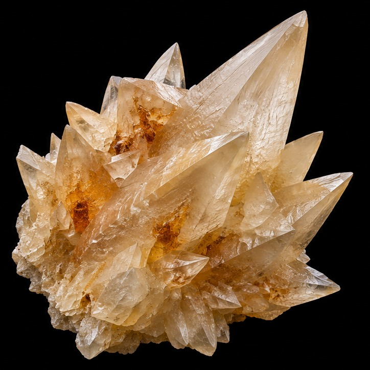

Carbonate CaCO₃
Calcite
A cluster of sharp, uneven points.

Trace the faces from the broad base to their narrow tips. This pointed crystal habit is called dogtooth spar. Under ultraviolet light, some calcite specimens glow orange-red.
Illustrated specimen · simulated fluorescence
University of St Andrews collection ↗